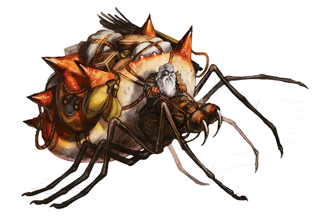

Самка стидера
Female Steeder
Большой Монстр, без мировоззрения

Класс Доспеха 14 (природный доспех)
Хиты 30 (4к10 + 8)
Скорость 30 футов, лазая 30 футов
| мод | спас | ||
|---|---|---|---|
| СИЛ | 15 | +2 | +2 |
| ЛОВ | 16 | +3 | +3 |
| ТЕЛ | 14 | +2 | +2 |
| мод | спас | ||
|---|---|---|---|
| ИНТ | 2 | −4 | −4 |
| МДР | 10 | +0 | +0 |
| ХАР | 3 | −4 | −4 |
Навыки Восприятие +4, Скрытность +7
Чувства тёмное зрение 120 футов, пассивное Восприятие 14
Опасность 1 (200 опыта)
Бонус мастерства +2
Среда обитания Подземье
Особенности
Паучье лазание. . Самка стидера может лазать по сложным поверхностям, включая потолки, без совершения проверок характеристик.
Невероятный скачок. . Расстояние прыжка стидера утраивается. Каждый фут передвижения, затраченный на прыжок, даёт 3 фута дальности прыжка.
Действия
Укус. . Рукопашная атака оружием: +5 к попаданию, досягаемость 5 футов, одна цель. Попадание: Колющий урон 7 (1к8 + 3) плюс Урон ядом 9 (2к8).
Липкие лапы. . Рукопашная атака оружием: +5 к попаданию, досягаемость 5 футов, одно существо c размером не больше среднего. Попадание: Цель прилипает к лапе стидера и схвачена до тех пор, пока не освободится (Сл высвобождения 12). Стидер может удерживать только одно существо за раз.
Описание
“Стидеры похожи на пауков так же сильно, как ворги похожи на волков. Существа могут казаться похожими, но стидеры - это нечто большее, чем просто паразиты.”
— Морденкайнен
Гигантские охотничьи пауки, стидеры рыщут по Подземью. Со многими стидерами можно столкнуться вместе с группой дуэргаров. Самки стидеров растут больше и сильнее самцов, и часто пожирают своих самцов после спаривания. Многочисленные жители Подземья приручают стидеров, особенно дуэргары. Обычно самки служат верховыми животными в бою, в то время как самцы используются в качестве тягловых животных.
Стидеры считают других своих сородичей своими врагами и пытаются разорвать в клочья свою предполагаемую угрозу. Их дуэргарские наездники стараются избегать прочих наездников и надевают им наглазники во время езды, чтобы стидеры не напали друг на друга.
Стидеры достаточно разумны для обучения простым жестовым и голосовым командам, но даже одомашненный стидер может обратиться против своего дрессировщика. Дрессировка этих бестий требует особой связи наездника со стидером, такой процесс происходит сразу после того, как стидер вылупится из яйца. Наездник остаётся со стидером, пока тот не вырастет до своего полного размера, разбираясь в течении этого времени с инстинктами хищника у стидера.
Вместо того, чтобы плести сеть паутин, стидеры выделяют из своих ног вязкую субстанцию. Эта слизь позволяет им ползти по стенам и потолкам, чтобы схватывать свою жертву.